밀리터리 잡담 - 항복, grappa, 잠수함과 기계학습
게시: 2024-07-11T06:30:50+09:00
<선생님, 지금 항복하신 거죠?> '남자들의 시대'인 16~19세기에 있어 육군이든 해군이든 열심히 싸우다가 적에게 항복하는 것은 결코 불명예스러운 일이 아니었음. 그 어떤 경우에도 '침몰하는 배와 함께 운명을 같이 한다'라는 너무나 비상식적인 개념은 없었음. 그렇게 항복을 하자면 상호 인식되는 항복 신호가 분명해야 했음. 흔히 백기를 항복 신호로 인식하는데, 해전의 경우 백기를 올리는 것 외에도, 돛대에 올린 깃발을 내리는 (strike colors) 것을 항복 신호로 받아들임. 그런데 대포알을 쏘아대다 보면 돛대가 부러지는 일도 종종 발생. 그럴 때 깃발도 당연히 함께 내려감. 이러면 저게 항복 신호인지 뭔지 어떻게 알 수 있나? 간단함. 보트를 내려서 상대 군함으로 저어간 뒤, 말로 물어 봄. "선생님, 지금 항복하신 거죠?" 그에 대해서 그렇다는 대답이 나올 때도 있었지만 많은 경우 욕지꺼리와 함께 'No'라는 대답이 나오기도. 그러면 알았다고 한 뒤 다시 노를 저어가 돌아가고나서 다시 대포알을 쏘아댔다고. 그러다가 상대방이 더 이상 응사를 하지 않으면 다시 노를 저어가서 '이제 생각이 바뀌셨나요?'를 물어봄. 1812년 8월, 영국의 HMS Guerriere와 미국의 USS Constitution이 캐나다 동해안에서 1대1로 맞붙음. 덩치가 더 컸던 컨스티튜션이 게리어를 훨씬 더 많이 두들겨 팼는데, 그런 와중에 게리어의 앞돛대와 주돛대가 부러짐. 컨스티튜션이 다시 전투를 재개하려 접근하자, 게리어는 컨스티튜션 쪽이 아닌 반대쪽 현측에서 대포를 한 방 발사. 이는 돛대가 부러져 깃발을 내리지도, 백기를 올리지도 못하는 경우 항복 의사를 표시하는 방법. 그러자 컨스티튜션의 중위 하나가 보트를 타고 게리어에게 접근한 뒤 목청 높여 물어봄. "선생님, 지금 항복하신 거 맞죠?" 그러자 게리어의 함장인 James Richard Dacres은 이렇게 답변했다고. "글쎼요, 선생님, 저도 잘 모르겠네요. 우리 뒷돛대가 부러졌고, 앞돛대와 주돛대도 부러졌거든요. 전체적으로 보면 우리가 깃발을 내렸다고 보셔도 될 것 같아요." (Well, Sir, I don't know. Our mizzen mast is gone, our fore and main masts are gone - I think on the whole you might say we have struck our flag.)
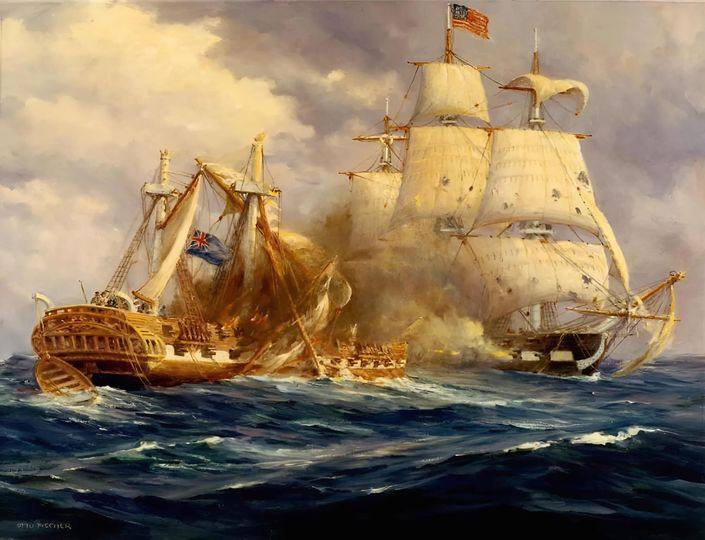
<왜 유럽의 전쟁은 낭만적이었을까> 1줄 요약 : 낭만이 아니라 차별임. 신분제 계급 사회에서 지배층끼리만 편하게 살았기 떄문. 비유하면 재벌가 사람들은 감옥 안 가는 것과 비슷. 위의 HMS Guerriere와 USS Constitution 간의 교전 및 항복에 대해 많은 분들이 재미있어 하시는 것은 좋았으나, 그걸 낭만의 시대라고 보시는 것 같아 부연 설명. 당시 유럽은 철저한 신분제 사회. 장교들은 거의 대부분 귀족 내지는 신사계급. 농부 집안의 똑똑한 아들이 장교가 될 가능성은 전혀 없음. 각국의 장교들은 자기 군대의 농부 출신 병사들보다는 적국의 장교들과 더 동질감을 느꼈음. 당시 전쟁도 국가와 민족을 지키기 위해...는 개뿔. 그냥 각국 왕가들의 비즈니스일 뿐. 당시 군대는 민간인을 해치지 않았는데, 이유는 그 인구와 농토 등을 차지하려고 싸우는 것이었기 때문. 따라서 적국의 군대가 쳐들어와도 대개 피난을 안감. 약탈은 흔했음. 그래도 피난을 안 가는 이유는 어차피 자국군에게도 징발(이라고 쓰고 약탈이라고 읽는다) 당하는 것은 마찬가지였으니까. 원래 이야기로 돌아와서, 그래도 싸울 때는 죽어라 싸웠는데, 이유는 그게 귀족의 명예를 지키는 일이라고 보았기 때문. 근데 명예를 지킬 만큼 싸웠는데도 이길 것 같지가 않으면 항복하는 것이 당연. 항복한 적의 장교들은 '불운한 동업자' 정도의 취급을 받아 대개 괜찮은 대접을 받았음. 승전 부대의 지휘관이 포로가 된 적 지휘관을 단 한 번도 식사 초대를 하지 않으면 예의가 없다고 욕 먹기 쉽상. 많은 경우 장교들은 탈출하지 않는다는 서약을 하면 일정 구역 내에서 자유롭게 풀어줬고, 심지어 '이 전쟁 끝날 때까지는 참전 않겠다'는 서약을 받고 본국으로 돌려보내기도. 근데 이 모든 것은 장교=귀족/신사계급의 사례일 뿐. 부사관 포함 일반 병사들은 매우 가혹한 처우에 놓였음. 음식은 고사하고 물도 제대로 안 주면서 햇빛도 잘 안 드는 감옥이나 헐크선에 가둬두는 경우가 많았음. 그리고 함께 포로가 된 장교들은 그런 부하 병사들에 대한 대우에 대해 대개 1도 관심이 없었음. 당시 해전에서는 무조건 항복(unconditional surrender, 보통은 그냥 surrender)이 많았으나 지상전에서는 협상에 의한 조건부 항복(capitulation)이 더 많았음. 그런 조건부 항복에서의 항복 조건 중 많은 경우, 장군과 장교들은 모두 안전하게 본국으로 돌아가고, 병사들만 포로가 되었음. 이때 본국으로 돌아가는 장군들과 장교들은 자신의 검은 물론, 그동안 현지에서 챙겼던 약탈품 포함한 개인 소지품도 모두 가지고 가는 것이 허락되었음. 그런 이기적인 조건으로 항복한 경우 본국에 돌아가서 처벌을 받았을까? 경우에 따라 다름. 제대로 싸우지 않고 항복한 경우엔 대개 처벌을 받음. 그러나 열심히 싸웠다고 판단되면 형식적인 군법 회의를 받고 무죄 방면(honourably acquitted)됨. 문제는 열심히 싸웠다는 것의 판단 기준이 뭐냐는 부분. 이 부분이 제일 슬픈데... 병사들이 얼마나 많이 죽었느냐 하는 것. 가령 1798년 8월, 지중해에서 자신보다 훨씬 큰 74문짜리 프랑스 3급 전열함 Généreux와 싸우다 결국 항복한 50문짜리 영국 4급함 HMS Leander의 함장 Thomas Thompson은 나중에 부하 장교들과 함께 포로 교환에 의해 귀국한 뒤 명예로운 무죄 선고를 받았는데, 그 이유는 약 1/3 정도의 선원들이 사상자로 쓰러질 때까지 싸웠기 때문. 아래 그림이 바로 그 전투 장면.
그러나 최소한 저때 장교들은 명예가 뭔지는 알고 있었음. 바로 전투 최전선에 서서 자기 자신을 적탄과 포탄에 드러내는 것을 두려워 하지 않았다는 것. 요즘 사회적 지도층처럼 말로만 전쟁불사를 외치다가 정작 전쟁이 나면 자신이나 자신의 자식들은 안전한 후방에 두지 않았음. 대표적인 경우가 이스라엘 수상 네타냐후와 그의 아들.
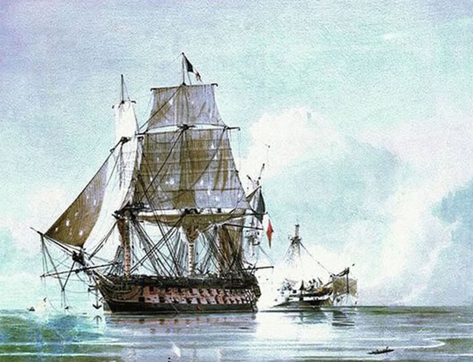
<얼마나 무서웠겠나> 미해군 PB4Y Catalina 비행정으로부터 기총 사격을 받는 일본해군 가와니시 H8K "Emily" 비행정의 모습. 아무리 일본군이라고 해도 서로 원수질 필요가 없는 젊은이들이 서로 죽고 죽이는 모습은 매우 비극적. 저 속에 탄 10명의 일본 젊은이들은 저 때 얼마나 무서웠겠나. ** 사진 속 H8K "Emily" 비행정은 매우 크고 중무장을 한 기체로서 24시간이 넘는 체공시간을 가진 WW2 당시 거의 유일한 항공기였고, 항속거리는 7100km로서 도꾜에서 하와이까지 (6481km) 한번에 비행이 가능. ** 일본 해군의 눈 역할을 톡톡히 해냈지만, 고공을 날며 정찰을 했기 때문에 필연적으로 레이더에 걸리기 딱 좋았고, 덕분에 많은 희생자를 낸 비극의 주인공.
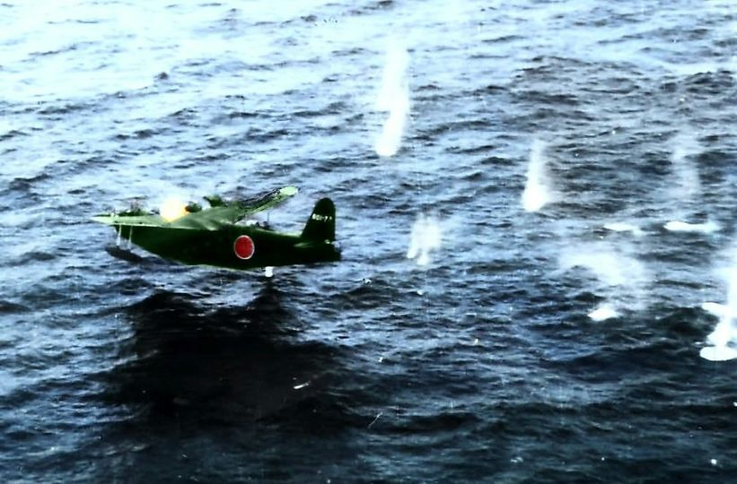
<내 입에는 들어오더라도 내 눈에만 띄지마> 안지오에 상륙한 미군 병사들은 현지에서 찾아낸 포도주와 부서진 항공기에서 얻은 구리관으로 작은 사설 증류기를 조립하여 grappa(비숙성 브랜디)를 만들었습니다. 자몽 주스 통조림과 섞으면 나쁘지 않은 맛이었습니다. 자기 부대의 규율과 사기의 조화를 가장 잘 판단했던 지휘관들은 이런 사설 증류기를 못본 척 했고, 실은 이런 밀주의 최대 고객이 그런 장교들이었습니다. 부대 지휘관들은 감찰관이 올 경우 부하들에게 미리 알려 주곤 했습니다.
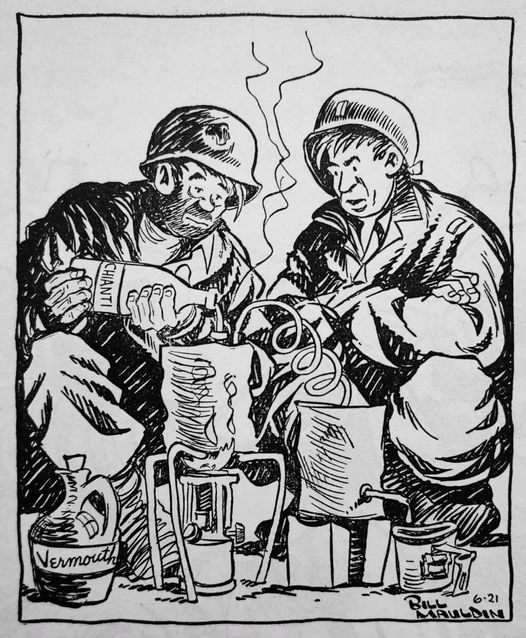
<의외의 사실> B-17 내부폭장량 (3.6톤)보다 AD-1 폭장량 (4.7톤)이 더 많음.
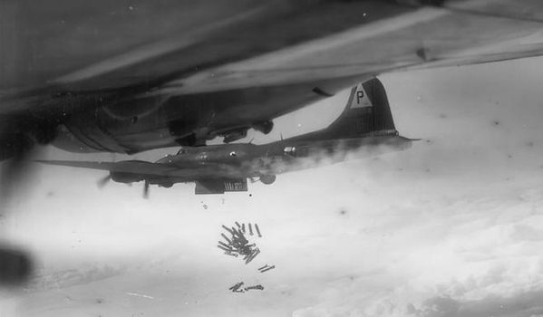
(다소 무성의하게 폭탄 투하 중인 B-17)
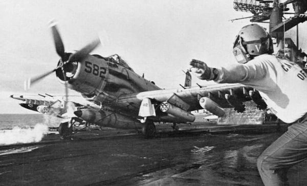
(항모의 짧은 갑판이라, 간소한 폭탄만 달고 이함하시는 AD-1 Skyraider)
<사라진 잠수함과 기계학습의 최적화>
아래 그림처럼 1번통에는 파란볼 3개와 노란볼 3개가 들어있고, 2번통에는 파란볼 2개와 노란볼 4개가 들어있음. 근데 누군가 두 통 중 어느 통인지 모르는 통에서 볼을 하나 뽑았는데 파란색임.
여기서 문제 : "이 볼이 나온 통이 1번통일 확률을 구하시오" 정답은 3/5. 자세한 풀이는 아래 그림에 있으니 직접 보셈. 나도 내용을 그때는 이해했으나 지금 다시 보니 까먹었음. 묻지 마셈.
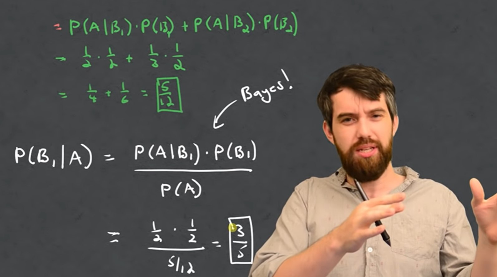
이거 Bayesian theorem을 이용한 것. 저거 만든 토마스 베이즈(Thomas Bayes)는 18세기 영국 철학자이자 목사. 이 베이즈의 정리는 최적화 기법에 많이 사용되는데 특히 요즘엔 기계학습 최적화에 거의 필수처럼 사용됨. 이 베이즈의 정리를 활용하면 수색 작업 중에 뭔가 발견을 하든 못하든 그 결과를 입력값으로 하여 다른 수색 구간에 대한 확률을 실시간으로 계산이 가능하므로 그 다음엔 어디를 찾아야 할지 합리적으로 알 수 있음.

가장 유명한 활용처는 갑자기 실종된 미해군 핵잠수함 USS Scorpion(SSN-589, 3100톤, 아래 사진)의 잔해를 찾아내는 데 사용된 것. 20대의 젊은 수학자들이 나이 40~50대의 선장들에게 여기 뒤져라 저기 뒤져라 지시를 할 때 선장들 표정이 매우 안 좋았다고.
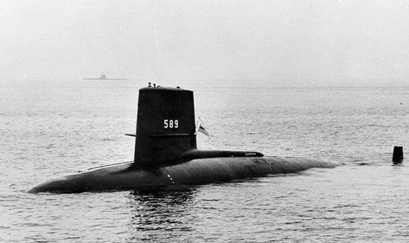
저 베이스 이론을 이용하면 가장 빨리 잔해를 찾을 수 있다는 장점이 가장 크지만, 매번 탐색을 위한 잠수를 실시할 때마다 '이 지점에서 잔해를 찾을 확률은 13.5%입니다' 다음 번에는 '27.4%입니다' 라는 식으로 명확하게 숫자를 줄 수 있다는 점.
<왜 독일은 항모를 포기했나> 아래 사진은 1938년 12월 진수되는 독일 항모 Graf Zeppelin (3만4천톤, 33노트).
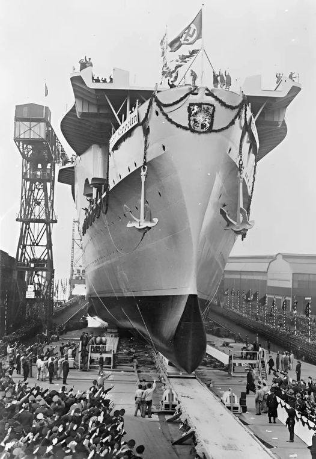
원래 4척이 계획된 이 그라프 제펠린급 항모의 완성에 방해가 된 것은 의외로 독일의 노르웨이 점령전의 성공. 지켜야 할 해안선이 너무 길어지면서 그 방어를 위한 대공포와 해안포 등에 너무 많은 자원이 들어감. 아래 사진은 1942년 독일군이 노르웨이 해안에 구축한 Austrått 요새의 280mm 해안포.
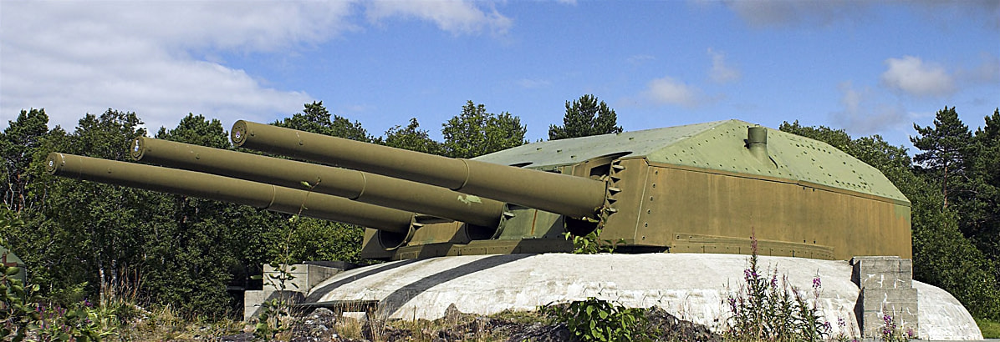
흔히 알려진 바와는 달리 1941년 비스마르크 격침 이후로도, 히틀러는 항모 필요성에 긍정적이어서 1942년 5월, 2척의 항모 완성을 위한 계획을 승인. 그러나 결국 독일 해군 항모의 발목을 붙잡은 것은 기술과 경험. 미국과 영국, 일본이 다년간 항모를 설계하고 운용하는 과정에서 온갖 삽질을 거듭했던 것은 결국 know-how 자산으로 쌓였는데, 독일은 그게 없었던 것. 가령 함재기용으로 급히 개조된 슈투카 폭격기 등은 생각보다 무거워 더 강력한 캐터펄트와 어레스팅 기어를 필요로 했고, 비행갑판과 엘리베이터도 더 보강되어야 했음. 레이더도 설치해야 했고 무전통신 설비도 보완이 필요했고, 항공지휘실 등에 장갑판을 입히는 작업을 해보니 마스트 강화도 필요했음. 이런 작업을 하다보니 항모 전체의 무게가 생각보다 무거워지고 무게중심 재배치도 필요해짐. 심지어 연돌(굴뚝)에서 나온 연기가 항공지휘실의 시야를 자꾸 가리는 문제도 나와 재설계가 필요.
이런 작업들은 모두 생각보다 긴 시간과 비용을 필요로 했고 그러는 사이 전쟁은 패전으로 치달음.
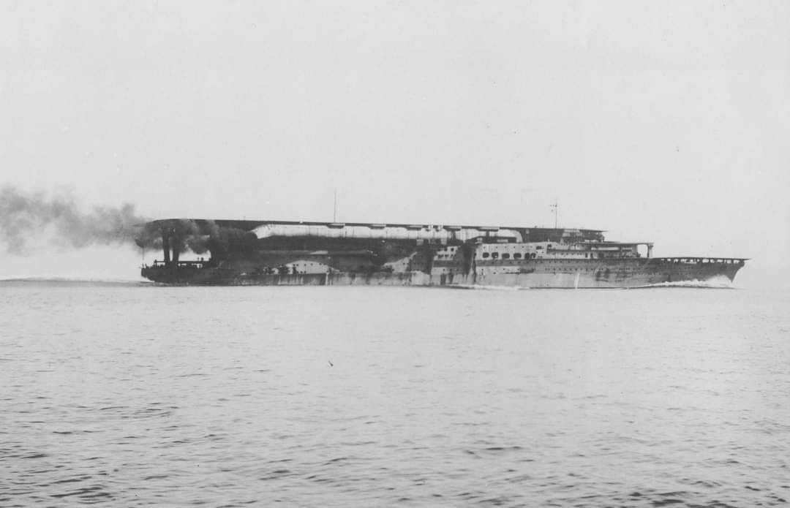
(이 사진은 일본해군 항모 카가의 1928년 시운항 모습. 일본 항모들은 함재기들의 이착함 때 연기로 인한 와류가 방해될까봐 저렇게 양현측에 해면을 향한 연돌을 만들었고, 미국 항모들은 반대로 아예 높은 연돌을 만들어 연기가 함재기 위로 날아가 버리도록 설계. 물론 양쪽다 일장일단이 있었는데, 카가의 경우 단점은 연기가 결국 항모 비행갑판 위로 날아들어 시야를 가렸다는 점과 함께, 저렇게 연돌이 양현측으로 길게 늘어지다보니 저 연돌과 맞닿은 부분의 승조원 선실이 너무 더웠다는 것.)